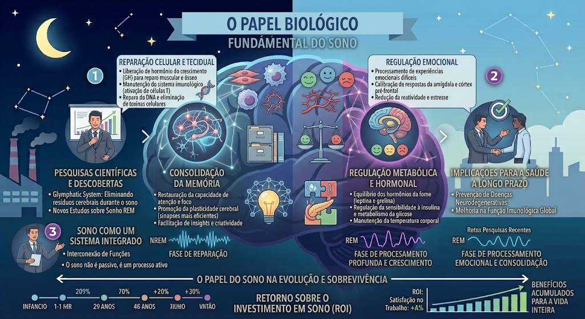
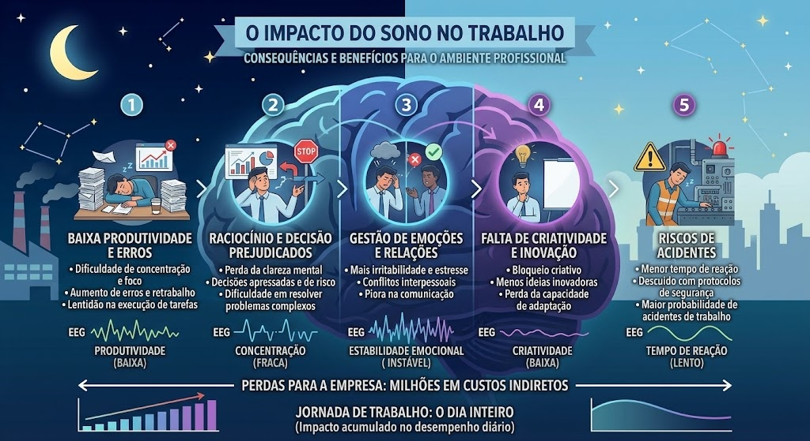
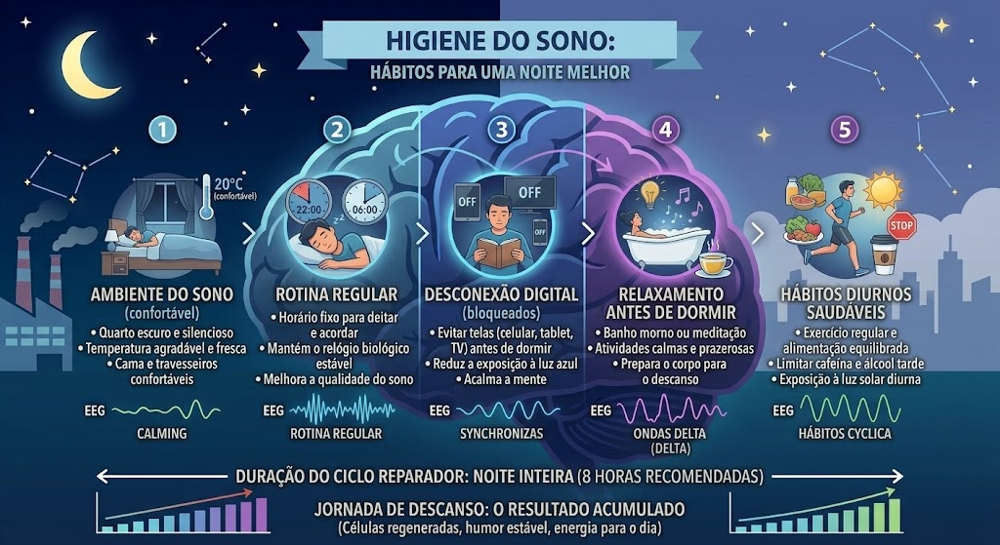
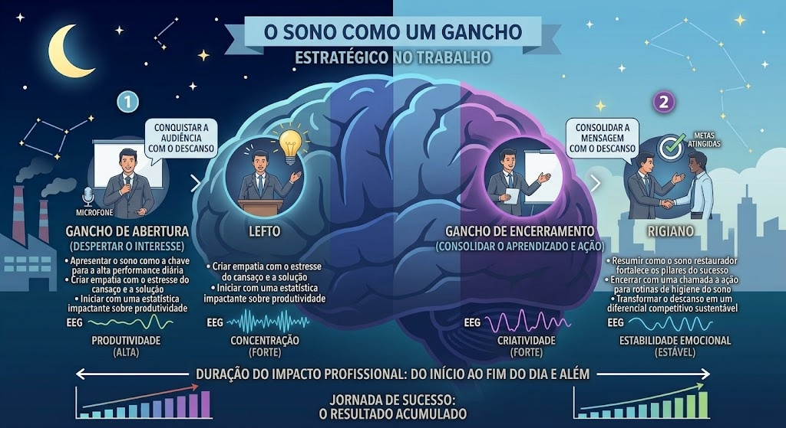
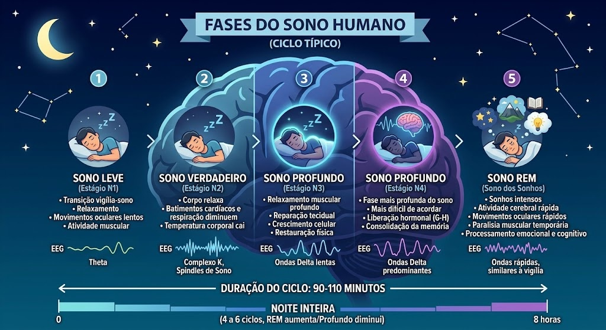
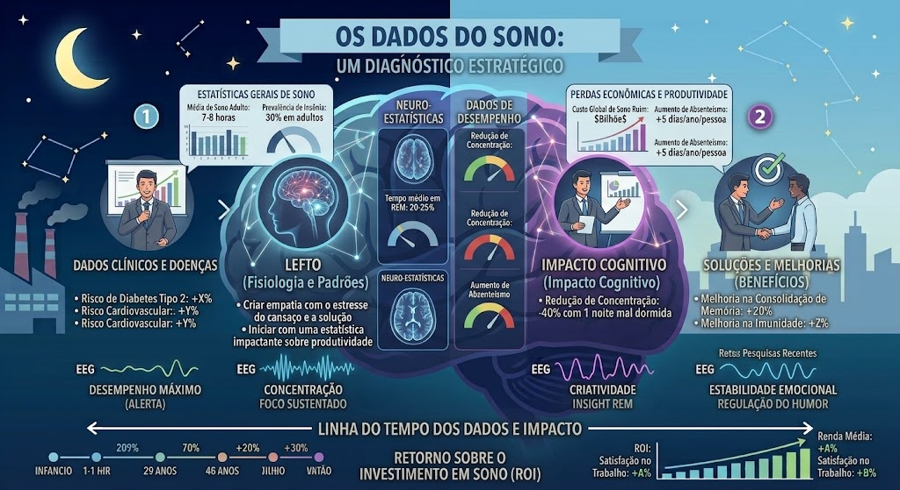

O sono atua ativamente na reparação celular e tecidual, incluindo a liberação de hormônio do crescimento (GH) para reparo muscular e ósseo e a eliminação de toxinas celulares[cite: 7].

A baixa produtividade gera perdas para a empresa com milhões em custos indiretos diários[cite: 8]. O cérebro sem descanso torna-se um risco operacional crônico.

Construir uma noite reparadora, com a duração recomendada de 8 horas para todo o ciclo, exige intencionalidade e planejamento do ambiente[cite: 9].

Saber comunicar a importância do descanso é essencial. É preciso conquistar a audiência com o descanso ao iniciar o assunto[cite: 10].

Um ciclo humano típico dura de 90 a 110 minutos. Ao longo da noite, o corpo orquestra a reparação através de estágios específicos[cite: 11]:

A falta de diagnóstico adequado gera uma epidemia invisível. A prevalência de insônia é alarmante, atingindo 30% em adultos[cite: 12].
